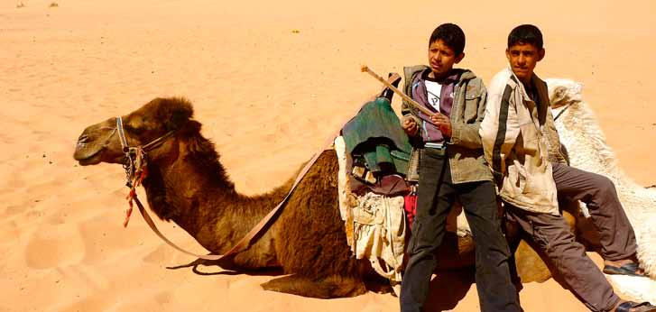
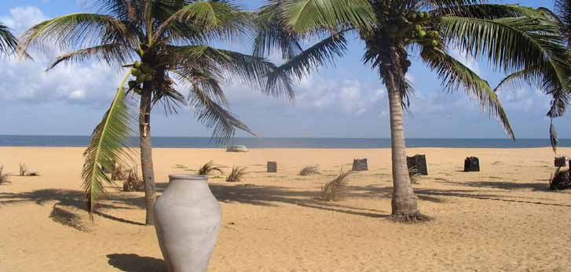

Familie Rejser
Vores familierejser er kulturrejser, der er tilrettelagt for både børn og voksne. På vores familierejser rejser i sammen med jeres egen lokale, engelsktalende familieguide. I tilrettelæggelsen af vores familierejser har vi taget højde for, at både børn og voksne skal opleve den store verden sammen. Rejserne er opdelt i dage med kulturoplevelser og dage med ren afslapning ved en strand eller på hoteller med et stort aktivitetsudbud. Rejserne er udviklet af børnefamilier, der ved, hvad der skal til for at gøre en rejse med børn til en succes. På familierejser er der forskellige behov, der skal tilgodeses og vi har derfor gjort en del ud af, at både du og dine børn oplever den fremmede verden i jeres tempo. Vi rejser til et eksotisk, spændende land, hvor I får et dybere indblik i landets kultur, end man traditionelt gør. Alle kan være med. Og det er altid oplevelserne og underholdningen, der er i centrum. Specielt udvalgte rejseledere sikrer, at aktiviteterne foregår i øjenhøjde med både de voksne og børnene.
-

Vietnam
Familierejsen til Vietnam er blandt vores mest populære rejser for familier med børn. Rejsen indeholder mange højdepunkter, bl.a. besøg hos en vietnamesisk familie i charmerende Hanoi. Her mærker I den vietnamesiske gæstfrihed og ser, hvordan en almindelig familie lever. Glæd jer ligeledes til den smukke sejltur i Ha Long-bugten, hvor I overnatter på skibet og kan nyde den stille aften og morgen i bugten, omgivet af de vidunder- lige kalkstensbjerge.
Læs mere om Vietnam her
-

Jordan
På vores familierejse i Jordan bevæger I jer gennem den smukke ørken med de enorme hvide sandyner så langt øjet rækker - lige indtil I når jeres ørkencamp. Her skal I spise aftensmad under den mørke, stjerneklare himmel, inden I falder til ro efter en lang og spændende dag. Vi har indlagt dage ved Aqa- ba-bugten, hvor I kan nyde stranden og høre historien om Aladdin, der netop kom fra disse kanter. Og så besøger I det smukke Petra. Turens mange højdepunkter rundes af med et par dage på et skønt hotel direkte ned til Det døde Hav.
Læs mere om Jordan her
-

Sri Lanka
Familierejsen til Sri Lanka er tilrettelagt med tre opholdssteder. På dags- ture oplever I tidligere kongebyer, hvor man fornemmer landets historiske dybde, kommer til Anuradhapura med det gamle Bo-træ og til Sigiriya, hvor Kong Kasyapa byggede sin særprægede løveborg på en klippetop. I bor bl.a. i det smukke Kandy, den gamle kongeby med Tandens Tempel. I besøger kokosplantager og hører om teproduktion, og så skal I naturligvis opleve det rige dyreliv i de frodige nationalparker. Rejsen slutter ved stranden b.a. med besøg på et skildpadde-center og med mulighed for en sejltur, hvor I kan observere blåhvaler.
Læs mere om Sri Lanka her
-

Marocco
Vi har sammensat en meget alsidig familierejse til Marokko, der kombi- nerer det farvestrålende Marrakech med ophold i den smukke Sahara-ørken. I ørkenen overnatter I på et lille ørkenhotel med udsigt over det smukke ørkenlandskab. Der er mulighed for at forlænge rejsen med ophold i Agadir, hvor I kan nyde stranden og det varme klima.
Læs mere om Marocco her
Fly og hoteller på rejsen
Rejserne tilrettelægges specielt til jeres familie, I bestemmer derfor, hvornår det passer jer at rejse. Derfor er der ikke som udgangspunkt fly med i prisen, idet fly kan variere i pris afhængigt af afrejsetidspunktet.
Kontakt os for at få den bedste pris på fly til og fra destinationen. Når vi vælger fly til jer tager vi højde for, at I rejser med børn.
På vores familierejser er hotellerne nøje udvalgt, så de matcher de fleste familiers ønske om komfort. Hotellerne ligger centralt og har swimmingpool, som de yngste i familien ofte sætter pris på.
I kan altid vælge en anden hotelkategori, end den vi har valgt, ligesom I kan ændre i programmet, så det passer til jeres familie.
Om os
Tlf. 7020 2779
www.HorisontRejser.dk
info@horisontrejser.dk
Rovsingsgade 88
DK-2200 København N
Medlem af Rejsegarantifonden nr. 1933
Medlem af Danmarks Rejsebureau Forening (DRF)
Book et møde
Det er vigtigt for os, at I er trygge ved at rejse, og at jeres forventninger til rejsen afstemmes inden afrejse. Derfor byder vi gerne på en kop kaffe eller te, så vi kan høre om, hvad det er, jeres familie ønsker. Tag gerne børnene med, så begynder rejsen allerede, og hele familien kan glæde sig sammen om den kommende drømmerejser.